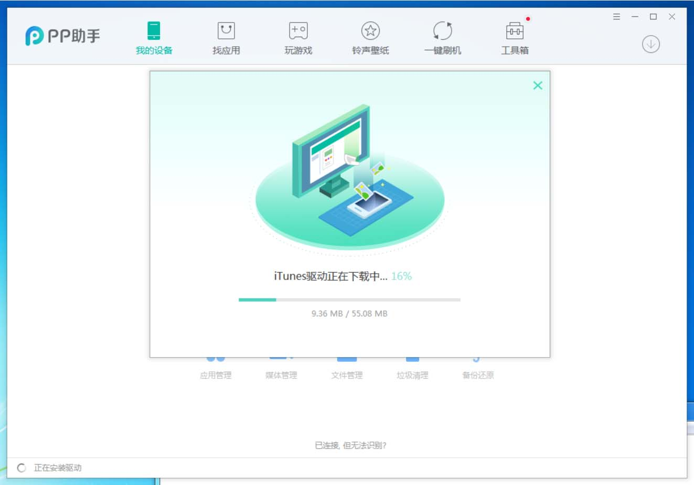
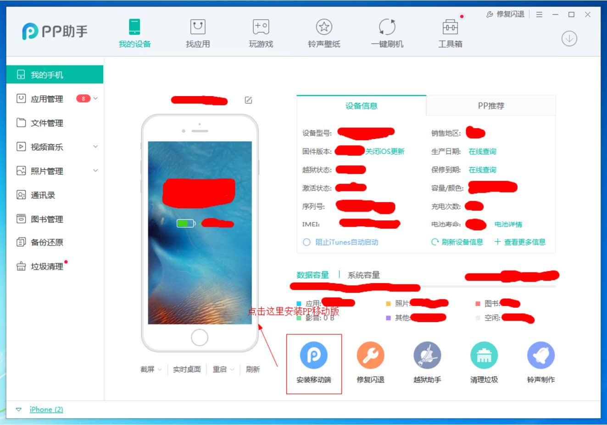
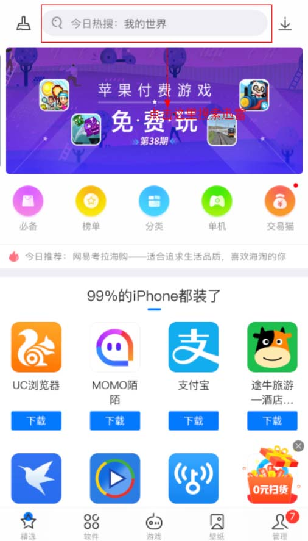
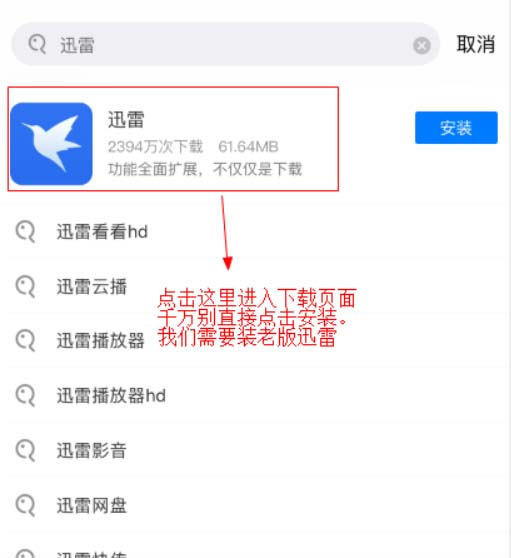
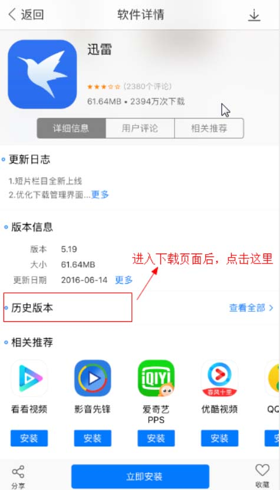
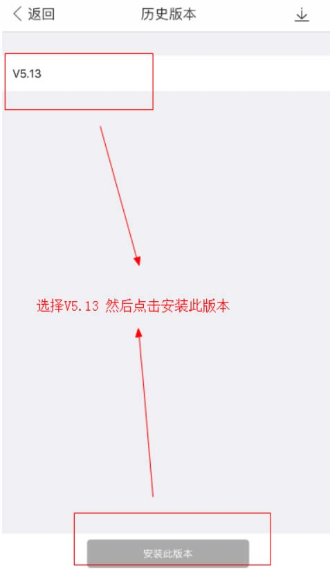
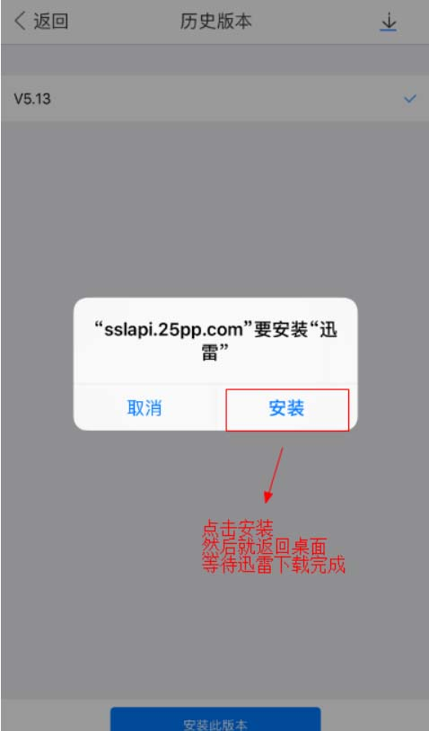

利用PP助手进行下载迅雷
此方法需要用到电脑，手机连接电脑进行下载pp助手，然后安装手机版pp助手
第一步 用电脑进入PP助手官网 https://pro.25pp.com/
点击这里直接安装windows版本PP助手
第二步，安装PP助手，然后手机插上数据线连接电脑，如何没有安装iTunes驱动会自动安装

第三步，插上手机后，PP助手会连接到手机，点击安装到移动端

第四步，安装成功PP助手之后，拿起手机，打开手机的PP助手

第五步，输入迅雷 然后点击进去，千万别直接点击下载。

第六步，拉到最下面，找到历史版本

第七步，点击安装V5.13版本

第六步，点击安装，然后返回桌面，等待下载完成。

第七步，大功告成，请打开迅雷进行下载本站电影。
使用迅雷下载本站电影教程
注： 部分地区部分运营商会暂时或长久屏蔽拦截我们的播放线路，给你带来不便，请谅解，我们正在解决此问题！
特别提醒：我们永久提倡保护未成年人，若你未满18周岁，请立即关闭离开！